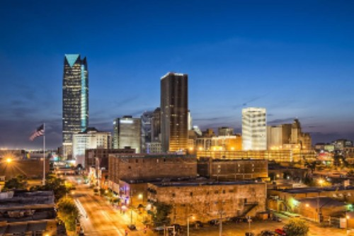
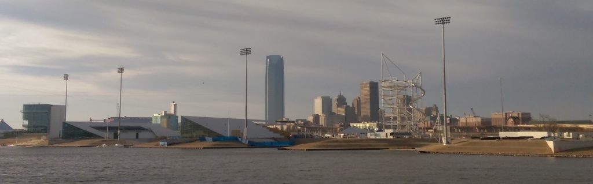
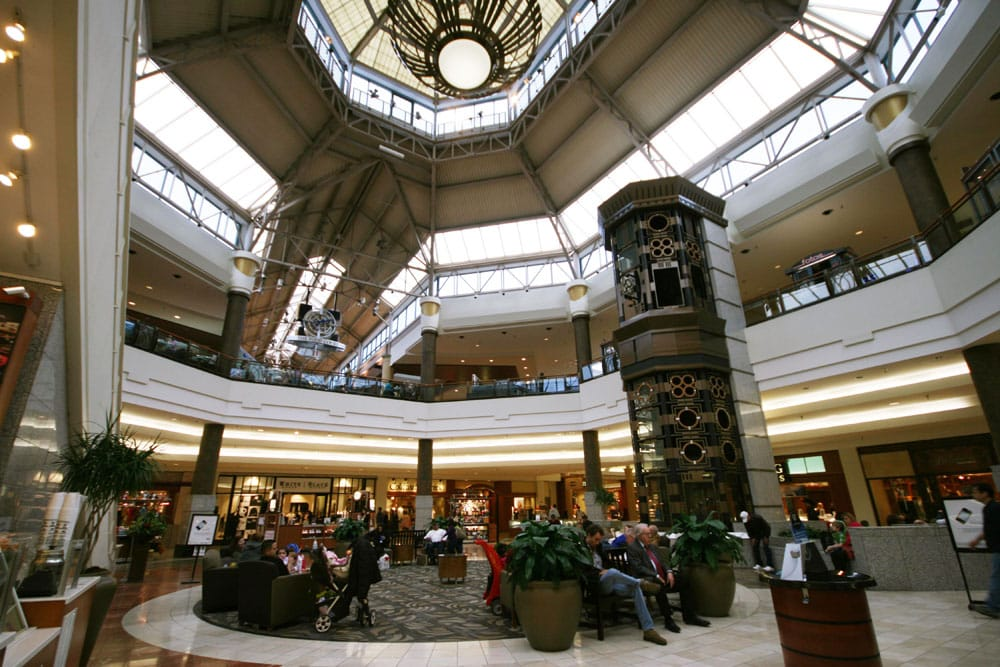
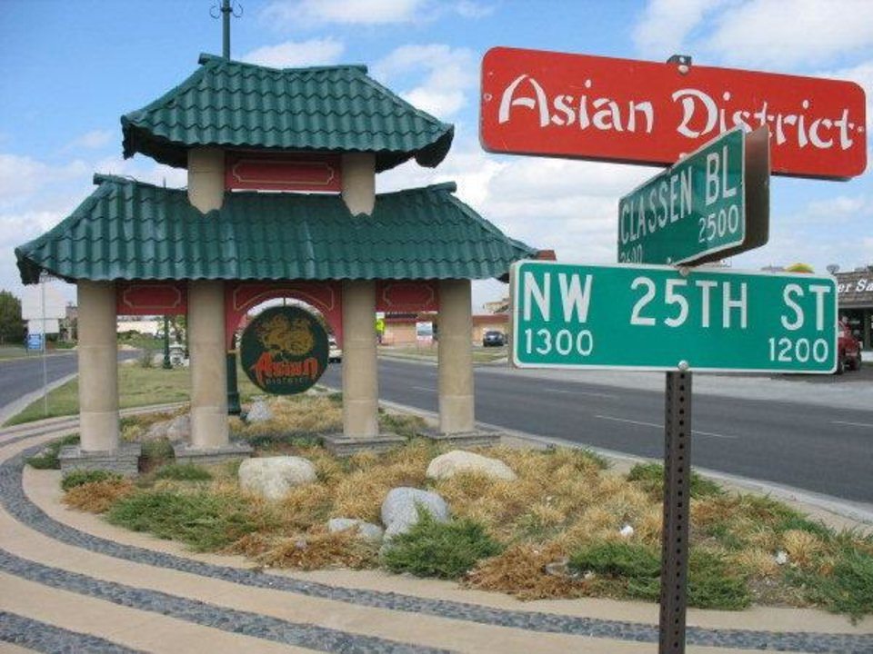

Oklahoma City is a city of a couple million people in the state of Oklahoma. Downtown, there are tall towers and a sprawling corporate center.

Downtown Oklahoma City
Though Oklahoma City isn't as prominent as coastal metropolitan areas like San Francisco or New York City, there are still plenty of things to do and sights to see.
Population
Geographic size of the city
Average temperatures
3422
300 sq km.
45 Degrees
3422
300 sq km.
45 Degrees
3422
300 sq km.
45 Degrees
Best Resturaunts
To the surprise of many, Oklahoma City has a wide range of different foods. See the table below for a few of my favorites.
As shown in the favorites table, resturaunts in OKC vary quite a lot. Sip Boba & Desserts and Cafe Kacao, for example, are international food/drink spots owned by locals.
Outdoor Recreation: OKC Riversport
Oklahoma City is home of an Olympic rowing training site.

OKC Riversport Adventures
Directions to OKC Riversport Adventures
Whether your favorite outdoor activity is swimming, rowing, or ziplining, all of these can be done at Riversport adventures and more! OKC Riversport can be booked for:
private events,
parties, or even
weddings
However, most people purchase daily or seasonal passes to take advantage of the river. Equipment for kayaking and rowing can be rented for a low cost from the Riversport shop.
OSSM: Oklahoma School of Science and Mathematics
OSSM is a two-year, publicly-funded boarding school from which I graduated in 2017. OSSM has sent top STEM students to prestigious universities including Harvard, Stanford, and MIT.
OSSM Library which leads into the 32-acre campus
A little known fact about OSSM is its attrition due to the heavy courseload, strict policies, and "sink or swim" culture - of the 86 person junior class present the day I arrived, only 64 of us graduated 2 years later. A whopping 26.4% dropout rate!
Penn Square Mall
Penn Square Mall is, according to its website, OKC's leading fashion destination with over 140 shops, a food court, and a movie theatre inside.

1st Floor of Penn Square Mall
Whether you buy clothes from Forever 21 or Men's Warehouse, Penn Square Mall is an excellent and popular choice for one's fashion needs.
Asian District
Finally, no tour of Oklahoma City would be complete without discussing the Asian district. As a Filipino-American, the Asian district was my home within a home growing up. At the Asian district, you can find most of Oklahoma City's Asian resturaunts and grocery stores, as well as Traditional Chinese Medicine clinics and jewelry shops.

The sign in front of OKC's Asian DistrictBack to Top